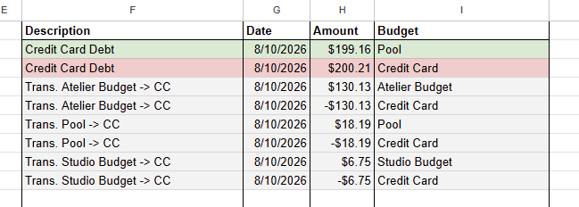
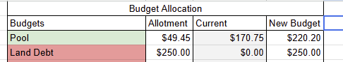
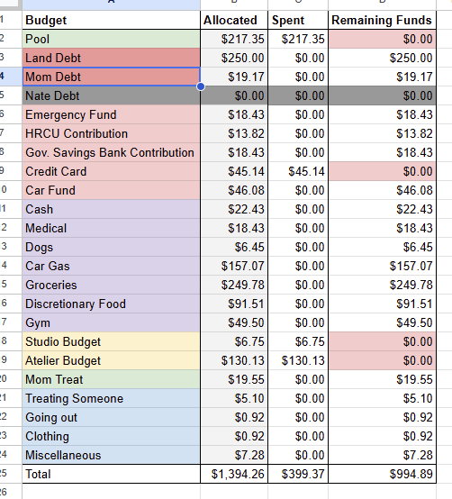

Jester
Start of it All
Growing up I was never really given any form of allowance. I was always told you had snacks at home or you'll have lunch after school is over. So I've never really had to manage my funds growing up because I had none. However, during my internship in 2024, I received a small stipen. Since it was just an internship I didn't manage my money in any form besides just holding on it. Following that internship I was hired, therefore my little stipen was changed into a salary. From that point on I decided that I'd be managing my money; ergo budgetting.
During this period in my life I used to name things I used to interact with frequently. So I decided on the name Jester for the google sheet's I'd be using for my budget sheet. Named after my favorite character from Critical Role's Second Campaign. I now had a working budget sheet that managed dutifully. Overtime I started changing the layouts, how I used to track my usage and how I determine what to spend my money on. After each major change to Jester I'd call it by a new version like if it was a new application. Early on I changed it a lot but the changes started slowing down, and mainly revolved around making it easier to handle new budget periods and budget allocation. Eventually it settled on version 7, where it's been unchanged since late 2025. At the start of 2026 I decided that I'd turn Jester into a Web Application to make it even eaiser for me to manage my budgets.
Analyzing Jester v7
Entries 1

The core data structure that allows for Jester to work properly is the budget entry. Entries is how Jester is aware of how money is being spent. The essential data modelling will be as follows:
- Description - Text - Description of the entry
- Date - Date - Date of when the money was spent
- Amount - Numbers - Amount of funds used
- Budget - Foreign Key - Link to a budget for tracking
Note: that the color of the entry is based on the color of the budget the entry is for. Also, they're 3 types of entries: Debit, Credit, Transfers. Debit is the default and most common type of entry where money is leaving the budget. Credit is the rarest type and is when money is coming into the budget, and lastly the second common type of entry is the Transfer. Transfers are movent of funds between to budgets, they are colored different for that purpose.
Budgets 1
Another core data structure of Jester is the budget. The budget is how Jester is aware of how much money we have currently. Which determines how much we can spend and if our allocation of funds is sound. The allocation of funds occurs after every new pay period; we'll get back to this shortly. The amount spent is determined by calculating the funds used during that pay period by the current entries. The amount remaining is just a simple calculation using the first two values. These calculations has to be done within the given pay period. Coming back to the allocation, it happens after I get paid which is why it's called a pay period or a period for short. The allocation process simple, based on a give allocation we add the new funds ontop of the current funds in the budget.

Data Model of the budget is as follows:
- Budget Name - Text - Name of the budget
- Budget Color - Text - Hex code representing the color for display
- Funds - Numbers - Current amount funds for that budget
- Allocation - Numbers - The amount funds that it'll be assigned every pay period
Entries 2
Since the we need to track the current entries for the pay period, we'll need a way to track them. Hence we can assign a period to the entries. Now we have the following structure for the entries:
- Description - Text - Description of the entry
- Date - Date - Date of when the money was spent
- Amount - Numbers - Amount of funds used
- Budget - Foreign Key - Link to a budget for tracking
- Period - Foreign Key - Link to a budget for trackingor
Period - Numbers - Value to group entries for a given pay period

Jester Functionality
Overall Goal:
Create A function web application.
Requirements:
Entries
Goal: Full Entry Management
Reason: So that user's can